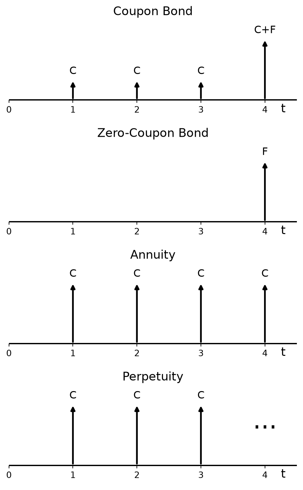

Code
import matplotlib.pyplot as plt
import numpy as np
def cashflow_chart(ax, cashflows, labels):
"""
cashflows: list or array of cash flow values
cashflows[0] is at t=0, cashflows[1] at t=1, etc.
"""
t = np.arange(len(cashflows))
# Horizontal axis (t) and vertical axis (F)
ax.axhline(0, color='black', linewidth=1.5)
# Arrows for cash flows
for ti, Fi, label in zip(t, cashflows, labels):
ax.annotate(
'',
xy=(ti, Fi),
xytext=(ti, 0),
arrowprops=dict(arrowstyle='-|>', linewidth=2, color='black')
)
ax.text(ti, Fi + 0.05 * max(1, max(abs(np.array(cashflows)))), label, fontsize=12, ha='center', va='bottom')
# Ticks and labels
ax.set_xticks(t)
ax.set_xticklabels([str(i) for i in t])
ax.set_yticks([])
# Axis labels only
ax.text(len(cashflows) - 1 + 0.25, -0.05 * max(1, max(abs(np.array(cashflows)))),
't', fontsize=14, ha='left', va='top')
# Clean up
ax.set_xlim(0., len(cashflows) - 0.5)
y_margin = max(1, max(abs(np.array(cashflows)))) * 0.3
ax.set_ylim(min(0, min(cashflows)) - y_margin, max(0, max(cashflows)) + y_margin)
ax.spines[['top', 'right', 'left', 'bottom']].set_visible(False)
ax.spines['bottom'].set_position('zero')
# Example: F0 positive, later cash flows negative
fig, axs = plt.subplots(4, 1, figsize=(5, 8))
cashflows = [0, 5, 5, 5, 15]
labels = ['', 'C', 'C', 'C', 'C+F']
cashflow_chart(ax=axs[0], cashflows=cashflows, labels= labels)
axs[0].set_title('Coupon Bond', fontsize=14)
cashflows = [0, 0, 0, 0, 10]
labels = ['', '', '', '', 'F']
cashflow_chart(ax=axs[1], cashflows=cashflows, labels= labels)
axs[1].set_title('Zero-Coupon Bond', fontsize=14)
cashflows = [0, 8, 8, 8, 8]
labels = ['', 'C', 'C', 'C', 'C']
cashflow_chart(ax=axs[2], cashflows=cashflows, labels= labels)
axs[2].set_title('Annuity', fontsize=14)
cashflows = [0, 8, 8, 8, 0]
labels = ['', 'C', 'C', 'C', '']
cashflow_chart(ax=axs[3], cashflows=cashflows, labels= labels)
# plot "..." to indicate continuation of cash flows
axs[3].annotate('...', xy=(4, 4), xytext=(4, 4), fontsize=30, ha='center', va='bottom')
axs[3].set_title('Perpetuity', fontsize=14)
plt.tight_layout()
plt.show()